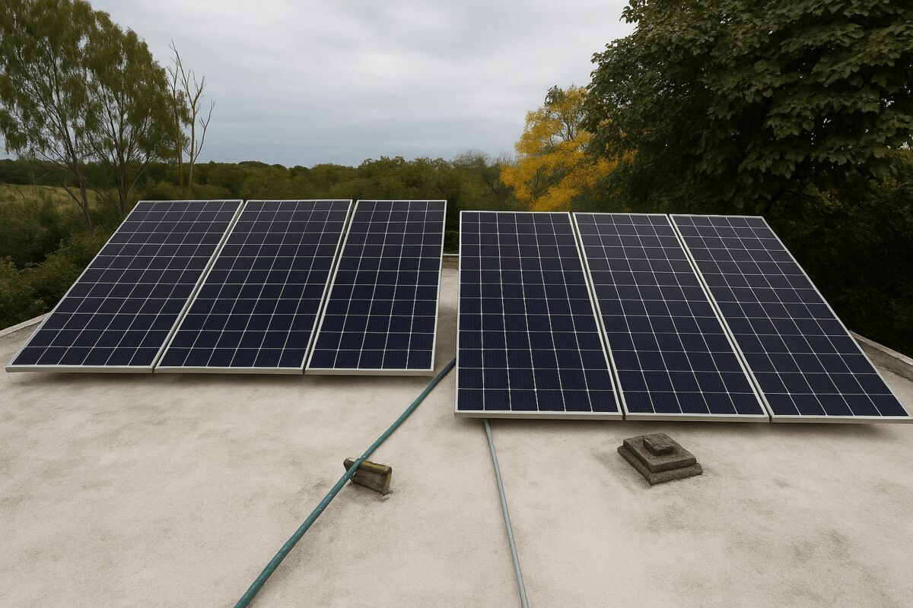

La tecnología es una herramienta. El criterio viene antes.
Ecorise no parte de una solución predeterminada. Una empresa puede necesitar generación solar, eficiencia, ingeniería, una revisión de infraestructura o simplemente información suficiente para descartar una inversión.
El objetivo es que cada recomendación pueda explicarse con datos, restricciones y supuestos claros, no con una promesa genérica de ahorro.
Técnico cuando hace falta. Claro siempre.
Entender
Escuchar operación, objetivos y restricciones antes de modelar.
Comparar
Separar alternativas con supuestos explícitos y criterios equivalentes.
Diseñar
Llevar la opción elegida a una solución técnica compatible con el sitio.
Acompañar
Seguir la implementación y la performance cuando el proyecto lo requiere.
Energía vista desde distintas escalas.
Desde una primera evaluación hasta el mantenimiento de una instalación existente, el trabajo cambia de profundidad pero conserva el mismo principio: cada paso tiene que aportar información útil a la decisión siguiente.


Una relación consultiva para proyectos con contexto real.
La energía no se decide en abstracto. Se decide en una planta, un establecimiento, un depósito o una inversión concreta.
Contanos qué estás evaluando.
Podemos ayudarte a determinar qué pregunta conviene resolver primero.
Contactar a Ecorise